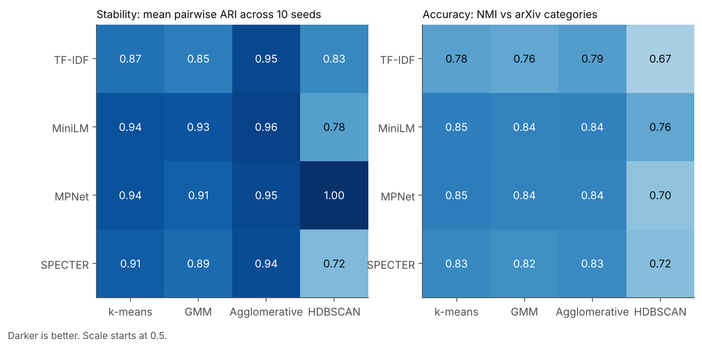
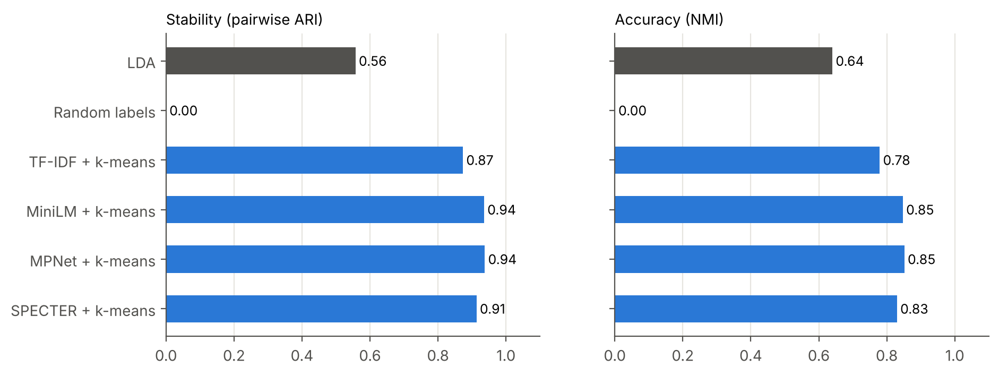
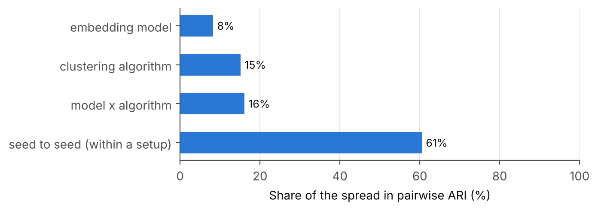
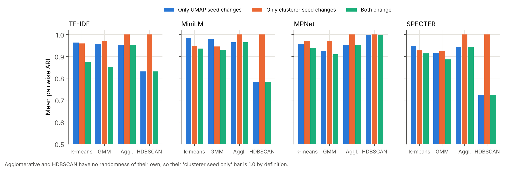
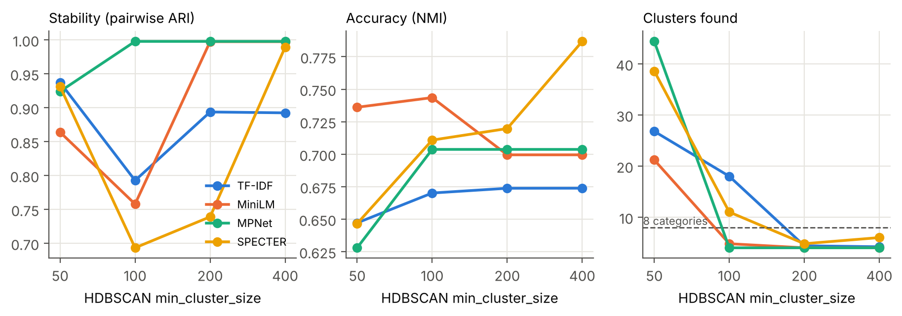
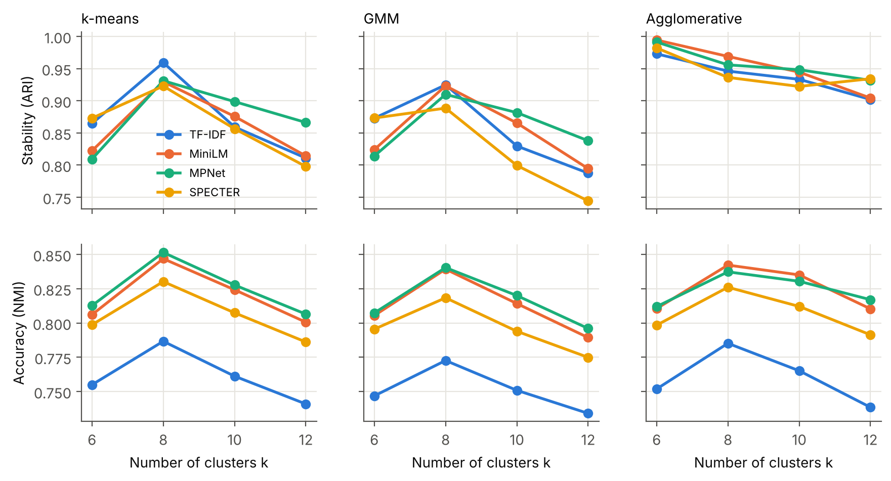
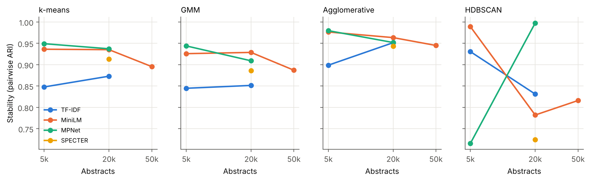
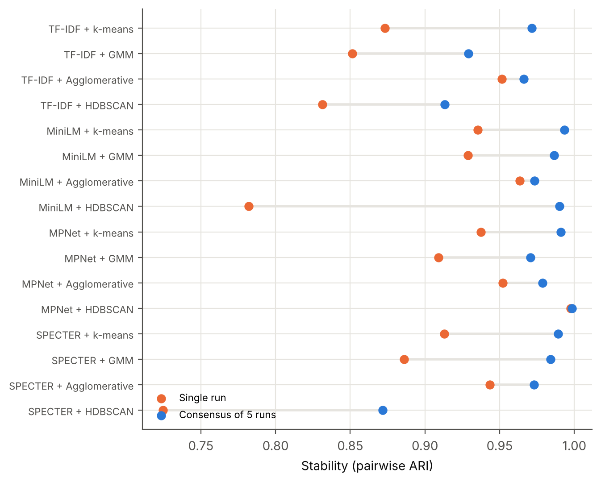
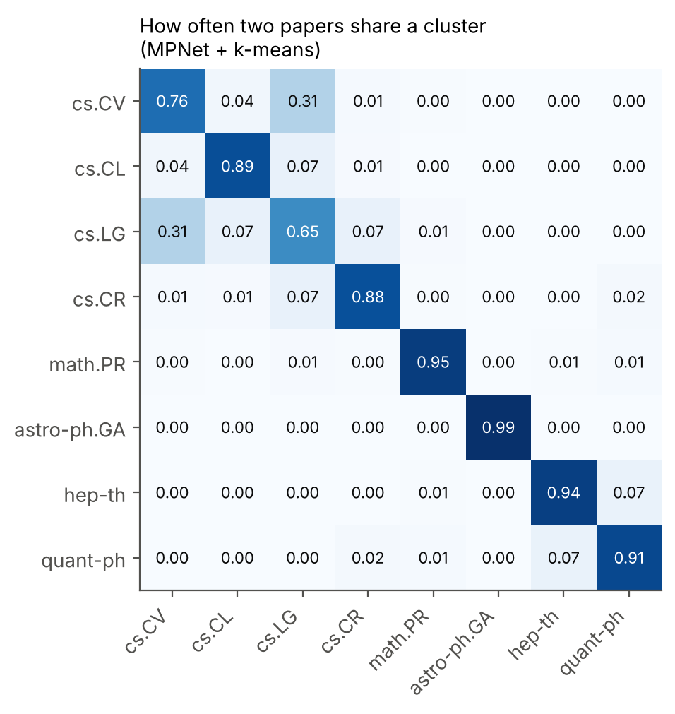
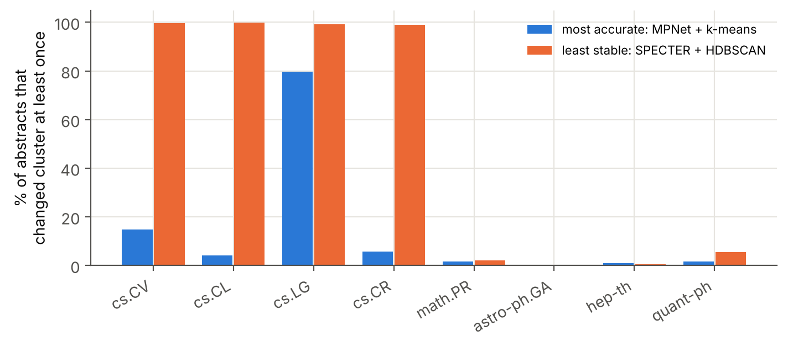

The question
A popular way to find topics in text is to turn each document into an embedding, shrink it with UMAP, and cluster it. The catch is that if you rerun the same thing with a different random seed, you can get different topics. So a single run might just be luck.
We wanted to know what causes that change. Is it the embedding model, the clustering algorithm, or the random seed itself? We also split the seed into two parts, the seed inside UMAP and the seed inside the clusterer, because in most tools one seed controls both and nobody checks which one matters.
Data
We used a free copy of the arXiv metadata on Hugging Face (gfissore/arxiv-abstracts-2021, CC0, papers through 2021). Each paper has an abstract and a list of categories. We use the first listed category as the paper's label.
- Main run: 20,000 abstracts, 2,500 from each of 8 categories.
- Size checks: the 5,000 abstract pilot, and 50,000 abstracts for one embedding.
- Categories: cs.CV (vision), cs.CL (language), cs.LG (machine learning), cs.CR (security), math.PR (probability), astro-ph.GA (galaxies), hep-th (high energy theory), quant-ph (quantum).
The labels are never used for clustering. We only use them at the end to check how close the clusters are to the real categories.
Method
- Embed each abstract four ways: TF-IDF + SVD (classic baseline), MiniLM, MPNet, and SPECTER (a model trained on scientific papers).
- Reduce to 5 dimensions with UMAP.
- Cluster four ways: k-means, Gaussian mixture (GMM), agglomerative (ward) and HDBSCAN. The first three are told to make 8 clusters. HDBSCAN picks its own number; we set its minimum cluster size to 0.5% of the data, a rule that does not look at the labels.
- Repeat with seeds 0 to 9 under three conditions: only the UMAP seed changes, only the clusterer seed changes, or both change.
- Score two things:
- Stability: adjusted Rand index (ARI) between every pair of runs. 1.0 means the two runs made the same groups.
- Accuracy: normalized mutual information (NMI) between the clusters and the arXiv categories.
Baselines: LDA topic modeling (each paper gets its top topic) and random labels. We also tested the number of clusters, HDBSCAN's minimum cluster size, and combining runs with consensus clustering.
Main results (20,000 abstracts)

- Neural embeddings are more accurate. MiniLM and MPNet reach NMI 0.84 to 0.85 with k-means, GMM and agglomerative. TF-IDF stays at 0.76 to 0.79.
- SPECTER did not help. Even though it was trained on papers, it scored a bit lower (0.82 to 0.83) than the general models on these abstracts.
- Agglomerative was the most stable of the methods that make 8 clusters (0.94 to 0.96), because its only randomness comes from UMAP.
- HDBSCAN was the least predictable. Its stability went from 0.72 to 1.00 and it found anywhere from 4 to 23 groups. MPNet with HDBSCAN gave the same answer every time (0.998), but only 4 groups and NMI 0.70. Stable does not mean right.


Where the change comes from: UMAP seed vs. clusterer seed

- For agglomerative and HDBSCAN, all of the instability comes from UMAP.
- For k-means and GMM, each seed on its own already moves the result a bit (stability about 0.91 to 0.99). When both change, the effects add up: TF-IDF with k-means drops from 0.96 with either seed alone to 0.87 with both.
- So fixing only the clusterer seed is not enough. UMAP needs a fixed seed too, or its randomness has to be measured.
How much the settings matter



Does combining runs help?

Consensus clustering makes k-means and GMM much more repeatable (stability 0.93 to 0.99 instead of 0.85 to 0.94), but it barely changes accuracy (NMI moves by 0.01 or less). It is a cheap fix for repeatability, not for quality.
Error analysis


- cs.LG is the problem category. In our most accurate setup, 80% of machine learning abstracts changed cluster at least once. A cs.CV paper and a cs.LG paper end up together 31% of the time. Machine learning papers are often about vision or language, so this overlap is real, not just a bug.
- Physics and math categories (astro-ph.GA, hep-th, math.PR, quant-ph) almost never move.
- In the least stable setup (SPECTER + HDBSCAN) nearly every computer science paper moved, because the four CS categories keep merging and splitting between seeds.
Limits
- One set of 8 categories and one random sample per size. Other categories (or more similar ones) may behave differently.
- arXiv categories are chosen by authors and overlap, so NMI is a rough check, not ground truth.
- The variance split is descriptive. Runs that share a seed are not independent, so we did not run significance tests on it.
- We kept UMAP settings fixed (5 dimensions, 15 neighbors). Those are another source of change we did not test.
- The 50k check uses one embedding and 5 seeds only.
Takeaways
- Report results over several seeds, and fix or vary the UMAP seed on purpose. One run is not enough.
- If you need repeatable topics, agglomerative clustering or a consensus of several k-means runs is the safest choice in our tests.
- Be careful with HDBSCAN defaults. A stable answer can still be the wrong number of topics.
Run it yourself
git clone https://github.com/tg769/topic-stability
cd topic-stability
pip install -r requirements.txt
python scripts/prepare_data.py --n 20000 # sample + embed
python scripts/run_experiments.py --n 20000 # all clustering runs
python scripts/analyze.py --n 20000 # result tables
python scripts/make_figures.py --n 20000 # figuresAll settings and seeds are in config.yaml. The exact papers we sampled are listed in data/ids_n20000.csv.